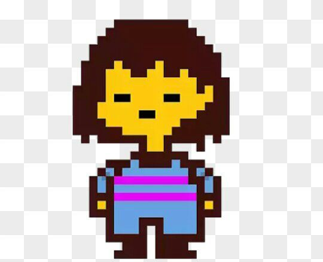

Frisk
Frisk é o protagonista de Undertale. É a criança humana que caiu no Subsolo e deve encontrar um caminho de volta à superfície.
O personagem é silencioso, e suas ações representam diretamente as escolhas do jogador.
Frisk pode escolher ser pacífico, violento ou algo entre os dois — o que impacta profundamente a história.